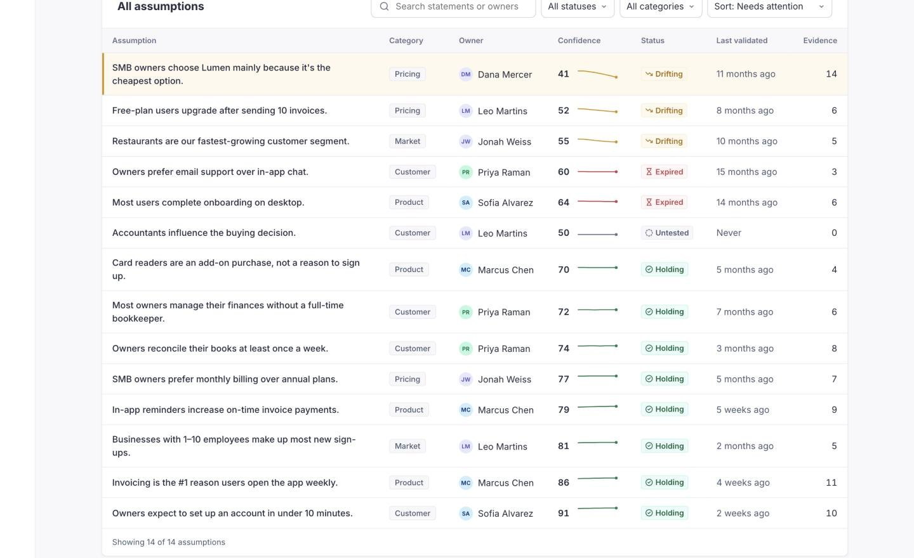

Step 1 Baseline
Every belief gets an owner, a score and an expiry date
Assumptions get their own home next to Projects. Each one shows who owns it, how confident the evidence makes us, when it was last checked and how much research backs it.
- Statuses are visible at a glance: Holding, Drifting, Expired, Untested.
- The list sorts by what needs attention, so the work starts at the top.
- Confidence comes from linked Maze studies, not opinion.
